สุสานใต้ดิน ชั้น 2 · ห้องราชา
ดูบนแผนที่และวิธีไป วางแผนฟาร์ม
ดันเจี้ยนในป่ากองไฟ · Lv 44–55
มอนในแมพ (9)
| มอน | Lv | ธาตุ | โซน |
|---|---|---|---|
| 46–52 | วิญญาณ | ||
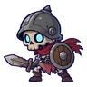 โครงกระดูกทหาร | 44–48 | อมตะ | |
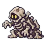 กองกระดูกแตกตัว | 44–48 | อมตะ | |
| วิญญาณเทียน | 44–48 | วิญญาณ | |
| 46–52 | อมตะ | ||
| 46–52 | อมตะ | ||
| 46–52 | อมตะ | ||
| 46–52 | อมตะ | ||
| 55–55 | อมตะ |
อุปกรณ์ที่ดรอปในแมพนี้
| ของ | โอกาสสูงสุด |
|---|---|
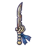 ดาบคู่ทหารโครงกระดูก | 0.25% |
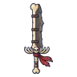 ดาบใหญ่กระดูกทหาร | 0.25% |
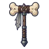 ค้อนยักษ์กระดูกต้นขา | 0.25% |
| 0.25% | |
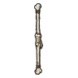 ไม้พลองกระดูกคู่ | 0.25% |
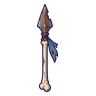 หอกทหารโครงกระดูก | 0.25% |
| ดาบโค้งกระดูกซี่โครง | 0.25% |
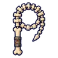 แส้กระดูกสันหลัง | 0.25% |
| 0.25% | |
| 0.25% | |
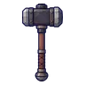 ค้อนยักษ์ช่างตีเหล็ก | 0.25% |
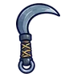 เคียวคู่ปากเหยี่ยว | 0.25% |
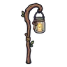 ตะเกียงโหลแก้ว | 0.25% |
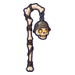 ตะเกียงกะโหลกทหาร | 0.25% |
| 0.25% |